Host laitteisto
- Prosessori: AMD Ryzen 9 5900x 12-Core
- Keskusmuisti: 32GB DDR4
- Näytönohjain: NVIDIA GeForce RTX 3080
- OS: Linux 7.2.11-1-cachyos x86-64
Virtuaalikone, local
- 4 CPU
- 6GB RAM
- 20GB
- Debian 13, 64-bit
Harjoitus 4: Pizza Fantasia (Karvinen 2026a)
x) Tiivistelmä
Karvinen 2023: Configuration Management of Distributed Systems over Unreliable and Hostile Networks (Karvinen 2023)
4.12.1 Size and Complexity of Some DSLs
- Salt työkalu sisältää 510 eri funktiota, joilla voi muokata agentti koneiden tilaa.
- Salt työkalun dokumentaatiossa on yli 20 000 riviä ja yli 75 000 sanaa.
- Puppet työkalu sisältää 113 funktiota.
4.12.2 Use of DSL: Functions in Case Configuration
- Puppetin funktioista vain neljää(file, package, exec, service) on oikeasti käytetty Mozillan konfiguraatien hallinta tiedostoissa.
- Exec komentoa käyttäessä, pitää varmistaa, että sen tila on aina idempotentti, lopputulos on aina sama samalla komennolla.
- United States Government Configuration Baseline-dokumentissa samojen neljän Puppet-funktion lisäksi augeas-komento löytyy 13 eniten käytetyn kutsun listalta.
4.12.3.1 Dependencies Between Main Functions
- Yleisimpiä käyttötapauksia on neljä, Daemonin asennus, sovelluksen asennus, käyttäjän hallinta ja tiedoston muokkaus.
- Daemonin asentamiseen tarvitsee package, file sekä service funktioneita.
- Käyttäjän hallintaan tarvitaan user ja group funktioneita.
- Tiedoston hallintaan ja muokkaamiseen tarvitaan file, directory sekä symlink funktioita.
a) Räpylä (Karvinen 2026a)
Päätän asentaa MySQL tietokannan virtuaalikoneelle. Aloitan
päivittämällä paketit komennolla sudo apt-get update.
Asennan MySQL:n komennolla
sudo apt-get install mysql-server(MySQL Documentation).
Löysin neuvoja suoraan MySQL dokumentaatiosta.
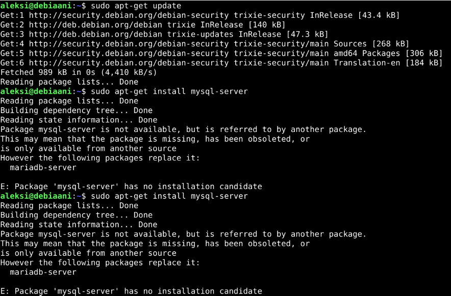
Mielenkiintoista. Käytän samaa komentoa kuin MySQL dokumentaatiossa
APT asennusohjeessa, mutta se antaa virheilmoituksen, ettei
mysql-server olisi saatavilla ja ehottaa
mariadb-server asentamista. Kysyin ChatGPT-6 kielimallilta
syötteellä
Why I cant install mysql-server through apt currently? ja
se antoi lähteeksi Stackrig blogin (Stackrig 2026). Sieltä käy ilmi,
että Debian 13 ja 12 versioiden oletus APT arkistoista eivät anna
MySQL:lle lataus ehdokkaita, vaan ehdottaa, että mariadb
asennettaisiin sen sijaan. Kysymys heräsi, että miksi näin on, joten
tutkin hieman asiaa ja huomasin, että molemmat ovat avoimen
lähdekoodin tietokantoja, mutta Oracle osti MySQL:n vuonna 2009, jonka
jälkeen MySQL alkuperäiset tekijät perustivat MariaDB:n ja jatkoivat
sen kehittämistä omaan suuntaansa (One.com 2026). Ehkä tässä vaiheessa
helpointa on vaihtaa MariaDB:n asentamiseen MySQL sijaan.
Siirryn nyt lukemaan MariaDB:n asennus dokumentaatiota (MariaDB
Documentation). Käytän asentamiseen komentoa
sudo apt install mariadb-server mariadb-client, koska ne
tarvitse Galera clusteria, ja jätän galera-4 komennon
pois. Huomaan latauksen aikan kuitenkin, että Galera asennetaan, joten
sen pois jättämisellä ei ollutkaan mitään väliä. Tarkistan asennuksen
jälkeen että mariadb on käynnissä komennolla
systemctl status mariadb.
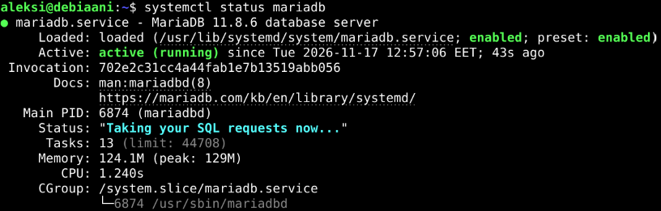
MariaDB on nyt käynnissä. Yritän mennä sisäälle MariaDB:hen, mutta se
ei onnistu komennolla mariadb -u root -p eikä
mariadb -u root -p.
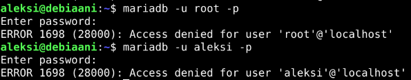
Teen sudo mariadb-secure-installation komennon, jolla
pääsee asettamaan root-käyttäjän salasanan. Muihin kohtiin vastasin
n. Nyt pääsen sisälle komennolla
mariadb -u root -p.
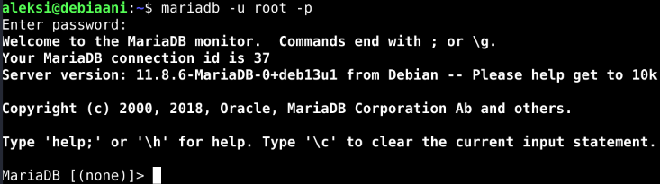
Tein testinä tietokannan nimeltä testi.
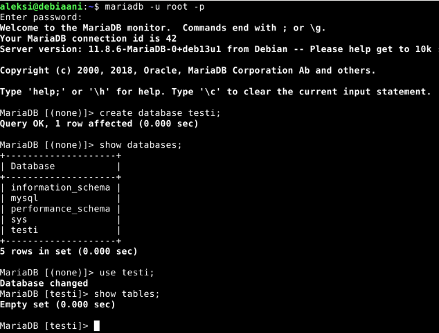
b) Automaatti (Karvien 2026a)
Automatisoidaan demonin asennus ansiblella. Teen Ansible-roolin mariadb ja lisään sen site.yml tiedostoon db hostien alle.
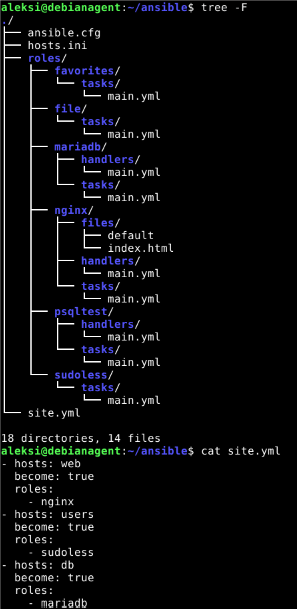
Handlereissä ei ole kuin mariadb palvelun uudelleenkäynnistys.
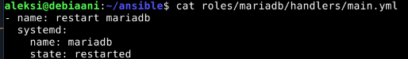
Käytän apt metodia pakettien tarkistamiseen ja copy metodia MariaDB:n konfiguraatio tiedoston luomiseen.
Päätän tehdä uuden käyttäjän ja sille saman nimisen tietokannan ja
pöydän MariaDB:ssä, jossa on kolumnit Hello sekä World.
Nämä onnistuvat ansiblen command metodilla. Käytän vaihtoehtoa
cmd ja komentoa
mariadb -e "create user if not exists anssi; create database if not
exists anssidb; use anssidb; create table if not exists
anssitable(hello varchar(10), world varchar(10));"
käyttäjän, tietokannan ja pöydän luomiseen.
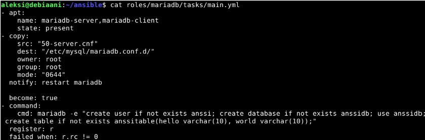
Ajan nyt pelikirjan komennolla
ansible-playbook site.yml ja 4 taskia tekevät muutoksia.
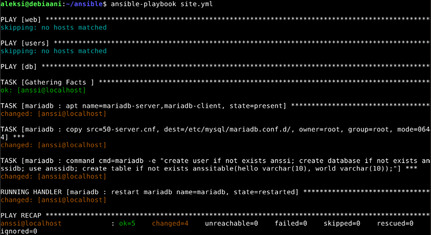
Ajo onnistui. Tarkistan vielä että tietokanta anssidb, pöytä
anssitable sekä kolumnit hello ja world löytyvät.
Käytin komentoa
sudo mariadb -e "use anssidb; show columns from anssitable;"
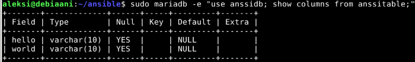
c) Asetus (Karvinen 2026a)
Tarkistin ensin MariaDB:n konffitiedoston, jota muokkasin
herralla/hallinta solmulla, komennolla
cat /etc/mysql/mariadb.conf.d/50-server.cnf, jonka
jälkeen ajoin Ansiblen pelikirjan komennolla
ansible-playbook site.yml, jonka jälkeen taas tarkistin
tiedoston sisällön samalla komennolla kuin aiemmin.
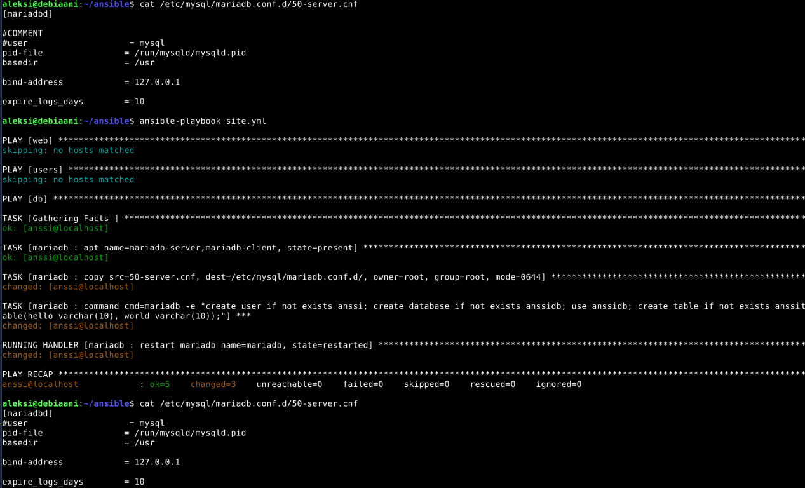
d) Paikka remonttiin (Karvinen 2026a)
Poistan MariaDB asennukset komennollasudo apt-get purge mariadb-server mariadb-client
ja ajan ansiblen pelikirjan sen jälkeen.
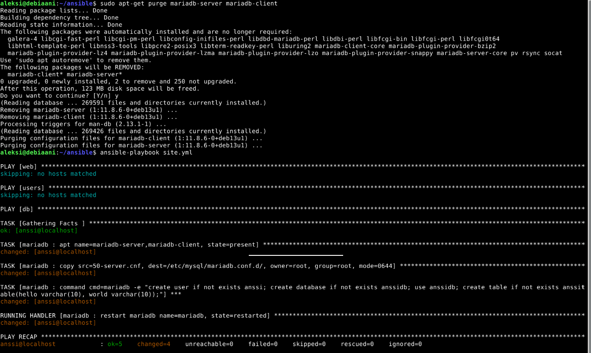
e) Idempotentti (Karvien 2026a)
En saanut tehtävää idempotentiksi, koska en saanut stdout tulostukseen mitään, josta olisin saanut tietoon, milloin tietokanta ja pöytä ollaan tehty ja milloin niitä ei ole tehty. Pitää tutkia jos löydän ratkaisun ensi viikon tunnille.
Tehtävänanto (Karvinen 2026a)
- x) Lue ja tiivistä. (Tässä x-alakohdassa ei tarvitse tehdä testejä tietokoneella, vain lukeminen tai kuunteleminen ja tiivistelmä riittää. Tiivistämiseen riittää muutama ranskalainen viiva. Ei siis vaadita pitkää eikä essee-muotoista tiivistelmää. Lisää kuhunkin jokin oma kysymys tai huomio.) - Karvinen 2023: Configuration Management of Distributed Systems over Unreliable and Hostile Networks (pdf, ̣mirrors: local, archive.org), vain nämä kohdat: - 4.12.1 Size and Complexity of Some DSLs (112. Ominaisuuksien määrä.) - 4.12.2 Use of DSL Functions in Case Configuration (112-115. Mitä oikeasti käytetään.) - 4.12.3.1 Dependencies Between Main Functions (115-117. Tärkeimmät rakennuspalikat.)
- a) Räpylä. Asenna itse valitsemasi demoni käsin. Jokin muu kuin tunnilla tai kotitehtävissä aiemmin asennettu, eli ei apache, ngninx eikä openssh-server. Kuten aina, testaa lopputulos.
- b) Automaatti. Automatisoi valitsemasi demonin asennus Ansiblella.
- c) Asetus. Muuta asetustiedostoa herralla (master, "control node") ja aja ansible uudestaan. Osoita, että asetukset tulivat käyttöön.
- d) Paikka remonttiin. Riko jotain asetuksia. Voit esimerkiksi poistaa demonin 'sudo apt-get purge foobar' (purge poistaa myös asetustiedostoja), poistaa asennuksen yhteydessä tulevan kansion (sudo rm -r /etc/foobar/ # vaarallista) tms. Ja sitten ajaa ansible-roolisi uudestaan ja todeta, että se korjaa tilanteen.
- e) Idempotentti. Osoita, että tilasi on idempotentti.
Lähteet
- Karvinen, Tero 2026a. h4 Pizza Fantasia. Luettavissa: https://terokarvinen.com/palvelinten-hallinta/#h4-pizza-fantasia. Luettu: 14.11.2026
- Karvinen, Tero 2023. Configuration Management of Distributed Systems over Unreliable and Hostile Networks. Luettavissa: . Luettu: 14.11.2026
- MySQL Documentation. 2.5.2 Installing MySQL on Linux Using the MySQL APT Repository. Luettavissa: https://dev.mysql.com/doc/refman/9.7/en/linux-installation-apt-repo.html. Luettu: 17.11.2026
- Stackrig, 9.10.2026. Package 'mysql-server' has no installation candidate on Debian 13. Luettavissa: https://stackrig.dev/blog/mysql-server-has-no-installation-candidate. Luettu: 17.11.2026
- One.com, 10.11.2026. MariaDB vs MySQL - miten ne eroavat toisistaan?. Luettavissa: https://www.one.com/fi-fi/academy/mariadb-vs-mysql/. Luettu: 17.11.2026
- MariaDB Documentation. Installing MariaDB Server Guide. Luettavissa: https://mariadb.com/docs/server/mariadb-quickstart-guides/installing-mariadb-server-guide. Luettu: 17.11.2026